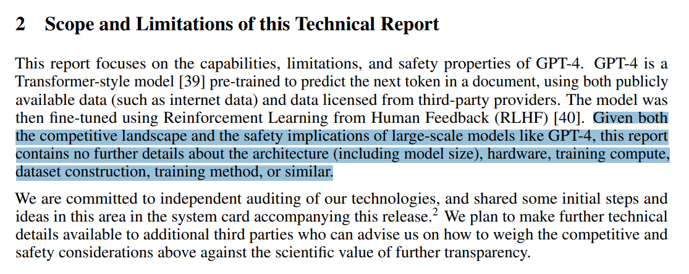
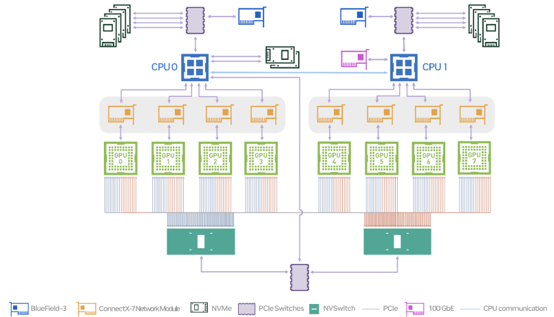
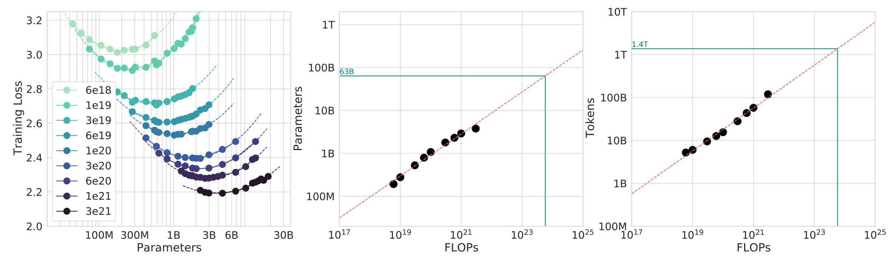
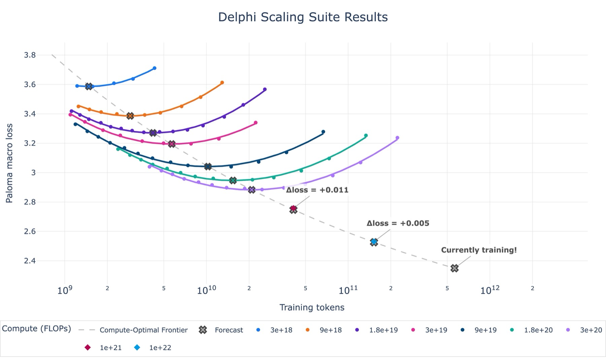

Language Modeling from Scratch · Lecture 01
Overview and Tokenization
Why build LMs from scratch, the LM landscape from n-grams to open-weight frontier models, the five course units, and tokenization: character, byte, word, and byte-pair encoding.
- 2026-09-19
- overview, tokenization, BPE
- Source ↗
In one minute
- Researchers are becoming disconnected from the technology (train → fine-tune → prompt). The course's answer: understanding via building.
- Frontier models are out of reach, and small models aren't always representative — but mechanics and mindset transfer; intuitions only partially.
- The bitter lesson, read correctly: algorithms that scale are what matter. \(\text{accuracy} = \text{efficiency} \times \text{resources}\) — so maximize efficiency.
- Five units, five assignments: basics, systems, scaling laws, data, alignment.
- Tokenization: character, byte and word tokenizers are each bad in a different way; BPE learns a vocabulary from data by repeatedly merging the most frequent adjacent pair.
Welcome
CS336: Language Models From Scratch (Spring 2026) — the 3rd offering of CS336. Lectures from the 2nd offering (Spring 2025) are on YouTube.

What's new?
- Same "from scratch" philosophy
- Prioritize high value-per-time concepts, don't lose the forest for the trees
- More coverage of modern LM ingredients (mixture of experts, long-context, agents)
Why did we make this course?
Problem: researchers are becoming disconnected from the underlying technology.
- 2016: researchers implemented and trained their own models.
- 2018: researchers downloaded models (e.g., BERT) and fine-tuned them.
- Today: researchers prompt API models (e.g., GPT/Claude/Gemini).
Moving up levels of abstraction boosts productivity, but
- These abstractions are leaky (in contrast to programming languages or operating systems).
- There is still fundamental research to be done that requires tearing up the stack.
Philosophy of this course
Full understanding of this technology is necessary for fundamental research — so: understanding via building.
But there's one small problem…
The industrialization of language models

Frontier models are really expensive:
- 2023: GPT-4 supposedly cost $100M to train. [article]
- 2025: xAI builds cluster with 230K GPUs for training Grok. [article]
There are no public details on how frontier models are built. From the GPT-4 technical report [OpenAI+ 2023]:

Frontier models are out of reach for us. We could build small language models (<1B parameters), but this might not be representative of large language models.


What can we learn in this class that transfers to frontier models?
There are three types of knowledge:
- Mechanics
- How things work (what a Transformer is, how model parallelism works).
- Mindset
- Squeezing the most out of the hardware, taking scaling seriously.
- Intuitions
- Which data and modeling decisions yield good accuracy.
We can teach mechanics and mindset (these do transfer). We can only partially teach intuitions (do not necessarily transfer across scales).
Intuitions? 🤷
Some design decisions are simply not (yet) justifiable and just come from experimentation. Example: Noam Shazeer paper that introduced SwiGLU [Shazeer 2020].

The bitter lesson
- Wrong interpretation: scale is all that matters, algorithms don't matter.
- Right interpretation: algorithms that scale are what matter.
accuracy = efficiency × resources
In fact, efficiency is way more important at larger scales (can't afford to be wasteful). [Hernandez+ 2020] showed 44× algorithmic efficiency on ImageNet between 2012 and 2019.
Framing: what is the best model one can build given a certain compute and data budget? In other words, maximize efficiency!
The language model landscape
Pre-neural (before 2010s)
- Language model to measure the entropy of English [Shannon 1950]
- N-gram language models (used in machine translation and speech recognition systems) [Brants+ 2007]
Neural ingredients (2010s)
- Long-Short Term Memory (LSTM) [Hochreiter+ 1997]
- First neural language model [Bengio+ 2003]
- Sequence-to-sequence modeling (for machine translation) [Sutskever+ 2014]
- Adam optimizer [Kingma+ 2014]
- Attention mechanism (for machine translation) [Bahdanau+ 2014]
- Transformer architecture (for machine translation) [Vaswani+ 2017]
- Mixture of experts [Shazeer+ 2017]
- Model parallelism [Huang+ 2018] [Rajbhandari+ 2019] [Shoeybi+ 2019]
Early foundation models (late 2010s)
- ELMo: pretraining with LSTMs, fine-tuning improves downstream tasks [Peters+ 2018]
- BERT: pretraining with Transformer, fine-tuning improves downstream tasks [Devlin+ 2018]
- Google's T5 (11B): cast everything as text-to-text [Raffel+ 2019]
Embracing scaling
- OpenAI's GPT-2 (1.5B): fluent text, first signs of zero-shot [Radford+ 2019]
- Scaling laws: provide hope / predictability for scaling [Kaplan+ 2020]
- OpenAI's GPT-3 (175B): in-context learning [Brown+ 2020]
- Google's PaLM (540B): massive scale, undertrained [Chowdhery+ 2022]
- DeepMind's Chinchilla (70B): compute-optimal scaling laws [Hoffmann+ 2022]
Open models
Early attempts (attempts to replicate GPT-3):
- EleutherAI's open datasets (The Pile) and models (GPT-J) [Gao+ 2020] [Wang+ 2021]
- Meta's OPT (175B): GPT-3 replication, lots of hardware issues [Zhang+ 2022]
- Hugging Face / BigScience's BLOOM (176B): focused on data sourcing [Workshop+ 2022]
Credible open-weight models (weights + paper):
- Meta's Llama models [Touvron+ 2023] [Touvron+ 2023] [Grattafiori+ 2024]
- Mistral's models [Jiang+ 2023] [Jiang+ 2024]
- DeepSeek's models [DeepSeek-AI+ 2024] [DeepSeek-AI+ 2024] [DeepSeek-AI+ 2024] [DeepSeek-AI+ 2025] [DeepSeek-AI+ 2025]
- Alibaba's Qwen models [Qwen+ 2024] [Yang+ 2025]
- Moonshot's Kimi models [Kimi Team 2025] [Kimi Team 2026]
- Z.ai's GLM models [GLM-4.5 Team 2025] [GLM-5-Team 2026]
- Minimax's models [MiniMax M2.5]
- Xiaomi's MIMO models [Xiaomi MIMO v2]
These models are approaching closed models (GPT, Claude, Gemini, etc.).
Open-source models (weights + paper + code + data):
- AI2's Olmo models [Groeneveld+ 2024] [Team OLMo 2024] [Team Olmo 2025]
- NVIDIA's Nemotron models [Parmar+ 2024] [NVIDIA+ 2025]
- Marin's models (open development) [Marin 8B retro] [Marin 32B retro]
| Category | Weights | Paper | Code + data | Examples |
|---|---|---|---|---|
| Closed | — | — | — | GPT, Claude, Gemini |
| Open-weight | ✓ | ✓ | — | Llama, DeepSeek, Qwen, Kimi, GLM |
| Open-source | ✓ | ✓ | ✓ | Olmo, Nemotron, Marin |
Openness is important for trust and innovation [Kapoor+ 2024]. Ideas from open models enable us to teach CS336.
What is a language model?
- 2018 (BERT): something you fine-tune
- 2020 (GPT-3): something you prompt
- 2022 (ChatGPT): something you talk to [example conversation]
- 2026 (agents): something that acts autonomously [example trace]
The fundamentals are the same (attention, kernels, optimization). The specs are different (longer context, inference efficiency matters even more).
Executable lectures
This is an executable lecture, a program whose execution delivers the content of a lecture. Executable lectures make it possible to:
- view and run code (since everything is code!),
- see the hierarchical structure of the lecture.
total = 0 # @inspect total
for x in [1, 2, 3]: # @inspect x
total += x # @inspect total
# trace: x = 1, 2, 3 → total = 1, 3, 6
Course logistics
All information online: course website.
This is a 5-unit class. Comment from Spring 2024 course evaluation:
The entire assignment was approximately the same amount of work as all 5 assignments from CS 224n plus the final project. And that's just the first homework assignment.
Why you should take this course
- You have an obsessive need to understand how things work.
- You want to build up your research engineering muscles.
Why you should not take this course
- You actually want to get research done this quarter. (Talk to your advisor.)
- You are interested in learning about the hottest new techniques in AI (e.g., multimodality, RAG, etc.). (You should take a seminar class for that.)
- You want to get good results on your own application domain. (You should just prompt or fine-tune an existing model.)
How you can follow along at home
- All lecture materials and assignments will be posted online, so feel free to follow on your own.
- Lectures are recorded via CGOE.
Assignments
- 5 assignments (basics, systems, scaling laws, data, alignment).
- No scaffolding code, but we provide unit tests and adapter interfaces to help you check correctness.
- Implement locally to test for correctness, then run on cluster for benchmarking (accuracy and speed).
- Leaderboard for some assignments (minimize perplexity given training budget).
AI policy
- Coding agents can solve all the assignments, but you won't learn anything.
- AI can be tremendously useful for answering questions and tutoring.
- You must use our provided AGENTS.md file, which asks the AI to be pedagogically-minded.
- Please read our AI policy guide.
Compute
- Thanks to Modal for providing compute. 🙏
- Please read the guide on how to access and use the compute.
Syllabus
| Unit | Topics | Assignment |
|---|---|---|
| 1 · Basics | tokenization, model architecture, training | A1 |
| 2 · Systems | kernels, parallelism, inference | A2 |
| 3 · Scaling laws | scaling laws | A3 |
| 4 · Data | evaluation, curation, transformation, filtering, deduplication, mixing | A4 |
| 5 · Alignment | RLHF, RL algorithms, RL systems | A5 |
Unit 1 · Basics
Goal: be able to train a basic language model. Components: tokenization, model architecture, training.
Tokenization
What are the atoms that the model operates on? Formally: a tokenizer converts between raw inputs (bytes) and sequences of integers (tokens).

Popular tokenizer: Byte-Pair Encoding (BPE) [Sennrich+ 2015]. Intuition: break input into frequently-occuring chunks.
Efficiency lens:
- Reduce context length (1000 bytes → ~250 tokens)
- Adaptive computation (more modeling capacity on interesting parts of input)
The dream: tokenizer-free model architectures, which operate directly on bytes [Xue+ 2021] [Yu+ 2023] [Pagnoni+ 2024] [Deiseroth+ 2024] [Hwang+ 2025]. These are promising, but have not yet been scaled up to the frontier.
Model architecture
Starting point: original Transformer [Vaswani+ 2017].

Refinements:
- Activation functions: ReLU, SwiGLU [Shazeer 2020]
- Positional encodings: sinusoidal, RoPE [Su+ 2021]
- Normalization: LayerNorm, RMSNorm, QK norm, pre-norm versus post-norm [Ba+ 2016] [Zhang+ 2019] [Dehghani+ 2023] [Xiong+ 2020]
- Attention: full, sparse/local attention, group-query attention (GQA), multi-head latent attention (MLA) [Child+ 2019] [Ainslie+ 2023] [DeepSeek-AI+ 2024]
- Recurrence/state-space models/linear attention: Mamba, Gated DeltaNet [Katharopoulos+ 2020] [Dao+ 2024] [Yang+ 2024] [Lahoti+ 2026]
- MLP: dense, mixture of experts [Shazeer+ 2017] [Fedus+ 2021]
- Shape (hidden dimension, depth, number of heads, number of experts)
Training
How do you set the parameters of the model?
- Loss function (e.g., multi-token prediction) [Gloeckle+ 2024] [DeepSeek-AI+ 2024]
- Optimizer (e.g., AdamW, SOAP, Muon) [Kingma+ 2014] [Loshchilov+ 2017] [Vyas+ 2024] [Keller 2024]
- Initialization scale (e.g., Xavier init, muP) [Glorot+ 2010] [Yang+ 2022]
- Learning rate schedule (e.g., cosine, WSD) [Loshchilov+ 2016] [Hu+ 2024]
- Regularization (e.g., dropout, weight decay)
- Batch size (e.g., critical batch size) [McCandlish+ 2018]
- MoE specific: load balancing (e.g., aux-free) [Wang+ 2024] [DeepSeek-AI+ 2024]
Assignment 1 (basics) — GitHub · PDF
- Implement BPE tokenizer
- Implement Transformer, cross-entropy loss, AdamW optimizer, training loop
- Do resource accounting
- Train on TinyStories and OpenWebText
- Leaderboard: minimize OpenWebText perplexity given 45 minutes on a B200 [last year's leaderboard]
High-level principle
Everything is about balancing the following:
- Expressivity (can represent complex dependencies in the data)
- Stability (keep parameter and gradient norms in goldilocks zone)
- Efficiency (runs fast on hardware, both training and inference)
Unit 2 · Systems
Goal: squeeze the most out of the hardware (GPU or TPU). Components: kernels, parallelism, inference.
Basics
- Resource accounting: memory and compute characteristics of a model — e.g. training 70B parameters on 1T tokens: \(6 \times 70\text{e}9 \times 1\text{e}12 = 4.2\text{e}23\) FLOPs
- Model parameters must be moved from memory (HBM) to the compute (SMs)
- Example: B200 can perform 2.25 PFLOP/sec (bf16) with 8TB/sec memory bandwidth
- Roofline analysis: understand whether we're compute-bound or memory-bound
- Benchmarking and profiling (nsight): see what happens in practice


Kernels
- Kernel is a function that runs on GPU
- When using PyTorch, each primitive operation launches a standard kernel
- Can write custom kernels to make GPUs go brrr
- Principle: organize computation to minimize data movement
- Strategies: operator fusion (matmul + activation), tiling (FlashAttention)
- Warp divergence, memory coalescing, bank conflicts, occupancy, bulk-async memory transfers
- Write kernels in CUDA/Triton/CUTLASS/ThunderKittens
Naive
read HBM; compute A; write HBM; read HBM; compute B; write HBM
Fused
read HBM; compute A and B; write HBM
Parallelism
- What if we have 1024 GPUs?
- Data movement between GPUs is even slower, but same "minimize data movement" principle holds
- Use classic collective operations (e.g., gather, reduce, all-reduce)
- Shard memory (parameters, activations, gradients, optimizer states) across GPUs
- How to split computation: {data, tensor, pipeline, sequence, expert} parallelism
Inference
Goal: generate tokens given a prompt (needed to actually use models!). Inference is also needed for reinforcement learning, test-time compute, evaluation.
Two phases: prefill and decode.

- Prefill (similar to training): tokens are given, can process all at once (compute-bound)
- Decode: need to generate one token at a time (memory-bound)
Methods to speed up decoding:
- Use cheaper model (via model pruning, quantization, distillation)
- Speculative decoding: use a cheaper "draft" model to generate multiple tokens, then use the full model to score in parallel (exact decoding!)
- Systems optimizations: fused kernels, continuous batching
Assignment 2 (systems) — GitHub · PDF from Spring 2025
- Implement a fused RMSNorm kernel in Triton
- Implement distributed data parallel training
- Implement optimizer state sharding
- Benchmark and profile the implementations
Recommended book: How to Scale Your Model — nicely lays out how to approach systems for LLMs conceptually. From Google, so it foregrounds TPUs, but high-level concepts are similar.
Unit 3 · Scaling laws
Setting: if you had 1e25 FLOPs of compute, what hyperparameters would you use to train a good model? Too expensive to do hyperparameter tuning at full scale!
Definition Scaling recipe
Key conceptual shift: instead of a single scale, think of a scaling recipe (FLOPs → hyperparameters). For a scaling recipe:
- Run experiments to compute the loss at various smaller scales (e.g., up to 1e24 FLOPs)
- Fit a scaling law to predict the loss of the scaling recipe at the target scale (e.g., 1e25 FLOPs)
Now you can:
- Optimize the scaling recipe targeting a larger scale using smaller scale experiments
- Predict the loss at the target scale before actually running the experiment!
Scaling laws don't happen automatically, they require careful construction of a scaling recipe. Parameterize the model in a way to get hyperparameter transfer [Yang+ 2022]. Predictability is at least as important as optimality!
Question: given a FLOPs budget \(C = 6ND\), use a bigger model (\(N\)) or train on more tokens (\(D\))? Classic compute-optimal scaling laws [Kaplan+ 2020] [Hoffmann+ 2022]:
- ISOFLOP curves: for multiple small FLOPs budgets, find optimal \(N\)
- Then fit a scaling law to extrapolate to large FLOPs budgets

TL;DR
$$ D \approx 20N $$ is roughly optimal (e.g., 70B parameter model should be trained on ~1.4T tokens).
Caveat: this doesn't take into account inference costs (want a smaller model).
Live example from Marin [post]:

Assignment 3 (scaling laws) — GitHub · PDF from Spring 2025
- We define a training API (hyperparameters → loss) based on previous runs
- Submit "training jobs" (under a FLOPs budget) and gather data points
- Fit scaling laws to the data points
- Submit extrapolated hyperparameters and loss predictions
- Leaderboard: minimize loss given FLOPs budget
Unit 4 · Data
Question: What capabilities do we want the model to have? Multilingual? Good at conversation? Agentic coding capabilities?
Evaluation
What is the purpose of evaluation?
- Internal: guide model development (smoothness across scales, relative performance matters)
- External: measure absolute quality of a real use case (ecological validity matters)
Examples of evaluations:
- Perplexity: ideally run on private documents not on Internet (avoid contamination)
- Advanced use cases: GPQA, HLE, SWE-Bench, Terminal-Bench
LMs are general purpose, require a diverse set of evaluations!
Data curation
- Data does not just fall from the sky.
- Sources: webpages crawled from the Internet, books, arXiv papers, GitHub code, etc.
- Appeal to fair use to train on copyright data? [Henderson+ 2023]
- Might have to license data (e.g., Google with Reddit data) [article]
- Raw data is HTML, PDF, directories (not text), requires processing

Data processing
- Transformation: convert HTML/PDF to text (extract main content)
- Filtering: keep high quality data, remove harmful content (via classifiers)
- Deduplication: save compute, avoid memorization; use Bloom filters or MinHash
- Data mixing: how much to upweight/downweight each source? [Liu+ 2024] [Chen+ 2026]
- Rewriting / synthetic data: use LM to augment real data, more similar to downstream tasks [Maini+ 2024]
Types of data:
- Pretraining data
- Large and diverse.
- Mid-training data
- High quality, including long-context.
- Post-training data
- Supervised fine-tuning (conversations, agentic traces with tool calling).
Assignment 4 (data) — GitHub · PDF from Spring 2025
- Convert Common Crawl HTML to text
- Train classifiers to filter for quality and harmful content
- Deduplication using MinHash
- Leaderboard: minimize perplexity given token budget
Unit 5 · Alignment
So far, we have trained a model on full supervision (predict the next token). Now that the model should be reasonable, we can improve it further from weak supervision. Why weak supervision? When it is easier to critique than to generate.
Basic template:
- Generate responses from the model.
- Score responses with a {human, verifier, LM judge}.
- Update the model to prefer better responses.
Algorithms:
- Proximal Policy Optimization (PPO) from reinforcement learning [Schulman+ 2017] [Ouyang+ 2022]
- Direct Policy Optimization (DPO): for preference data, simpler [Rafailov+ 2023]
- Group Relative Preference Optimization (GRPO): remove value function [Shao+ 2024]
Challenges
- RL algorithms are unstable and hard to tune
- At scale, this requires a lot of new infrastructure (inference with async rollouts)
- Constantly trading off systems efficiency and on-policyness
Assignment 5 (alignment) — GitHub · PDF from Spring 2025
- Implement Direct Preference Optimization (DPO)
- Implement Group Relative Preference Optimization (GRPO)
It's all about efficiency
- Resources: data + hardware (compute, memory, communication bandwidth)
- How do you train the best model given a fixed set of resources?
Today, we are compute-constrained, so design decisions will reflect squeezing the most out of given hardware.
| Area | How it's about efficiency |
|---|---|
| Systems | clearly about efficiency |
| Tokenization | working with raw bytes is elegant, but compute-inefficient with today's model architectures |
| Model architecture | many changes motivated by reducing memory or FLOPs (e.g., sharing KV caches, sliding window attention) |
| Data filtering | avoid wasting precious compute updating on bad / irrelevant data |
| Scaling laws | use less compute on smaller models to do hyperparameter tuning |
Tomorrow, we will become data-constrained…
Tokenization
This unit was inspired by Andrej Karpathy's video on tokenization; check it out! [video]
Intro
Raw text is generally represented as Unicode strings: "Hello, 🌍! 你好!".
A language model places a probability distribution over sequences of tokens (usually represented by integer indices): [15496, 11, 995, 0].
So we need a procedure that encodes strings into tokens. We also need a procedure that decodes tokens back into strings. A Tokenizer is a class that implements the encode and decode methods.
class Tokenizer(ABC):
"""Abstract interface for a tokenizer."""
def encode(self, string: str) -> list[int]:
raise NotImplementedError
def decode(self, indices: list[int]) -> str:
raise NotImplementedError
Tokenization examples
To get a feel for how tokenizers work, play with this interactive site.
Observations
- A word and its preceding space are part of the same token (e.g.,
" world"). - A word at the beginning and in the middle are represented differently (e.g.,
"hello hello"). - Numbers are tokenized into every few digits.
Here's the GPT-5 tokenizer from OpenAI (tiktoken) in action. Check that encode() and decode() roundtrip:
tokenizer = tiktoken.get_encoding("o200k_base")
string = "Hello, 🌍! 你好!"
indices = tokenizer.encode(string) # [13225, 11, 130321, 235, 0, 220, 177519, 0]
reconstructed_string = tokenizer.decode(indices) # "Hello, 🌍! 你好!"
assert string == reconstructed_string
Definition Compression ratio
Number of bytes per token:
$$ \text{compression ratio} = \frac{\#\text{UTF-8 bytes}}{\#\text{tokens}} $$
Here: 20 bytes / 8 tokens = 2.5.
def get_compression_ratio(string: str, indices: list[int]) -> float:
"""Given `string` that has been tokenized into `indices`, return the number of UTF-8 bytes per token.."""
num_bytes = len(bytes(string, encoding="utf-8"))
num_tokens = len(indices)
return num_bytes / num_tokens
The larger the compression ratio, the shorter the sequence (good since attention is quadratic in sequence length). One could increase compression ratio by increasing vocabulary size (number of possible token values increases), leading to sparsity. GPT-5's vocabulary size: 200,019. Let's take a look at the actual vocab.
Character tokenizer
A Unicode string is a sequence of Unicode characters. Each character can be converted into a code point (integer) via ord. It can be converted back via chr.
assert ord("a") == 97
assert ord("🌍") == 127757
assert chr(97) == "a"
assert chr(127757) == "🌍"
class CharacterTokenizer(Tokenizer):
"""Represent a string as a sequence of Unicode code points."""
def encode(self, string: str) -> list[int]:
return list(map(ord, string))
def decode(self, indices: list[int]) -> str:
return "".join(map(chr, indices))
# "Hello, 🌍! 你好!" → [72, 101, 108, 108, 111, 44, 32, 127757, 33, 32, 20320, 22909, 33]
There are approximately 150K Unicode characters. [Wikipedia] Vocabulary size here is at least max(indices) + 1 = 127,758 (a lower bound).
- Problem 1: this is a very large vocabulary.
- Problem 2: many characters are quite rare (e.g., 🌍), which is inefficient use of the vocabulary.
Compression ratio: 20 bytes / 13 tokens ≈ 1.54. This tokenizer is the worst of both worlds (large vocabulary, low compression ratio).
Byte tokenizer
Unicode strings can be represented as a sequence of bytes, which can be represented by integers between 0 and 255. The most common Unicode encoding is UTF-8. Some Unicode characters are represented by one byte, others take multiple bytes:
assert bytes("a", encoding="utf-8") == b"a"
assert bytes("🌍", encoding="utf-8") == b"\xf0\x9f\x8c\x8d"
class ByteTokenizer(Tokenizer):
"""Represent a string as a sequence of bytes."""
def encode(self, string: str) -> list[int]:
string_bytes = string.encode("utf-8")
indices = list(map(int, string_bytes))
return indices
def decode(self, indices: list[int]) -> str:
string_bytes = bytes(indices)
string = string_bytes.decode("utf-8")
return string
# "Hello, 🌍! 你好!" → [72, 101, 108, 108, 111, 44, 32, 240, 159, 140, 141, 33, 32,
# 228, 189, 160, 229, 165, 189, 33]
The vocabulary is nice and small: a byte can represent 256 values. What about the compression rate? It is exactly 1.
The compression ratio is terrible, which means the sequences will be too long. Given that the context length of a Transformer is limited (since attention is quadratic), this is not looking great…
Word tokenizer
Another approach (closer to what was done classically in NLP) is to split strings into words.
string = "I'll say supercalifragilisticexpialidocious!"
chunks = regex.findall(r"\w+|.", string)
# ['I', "'", 'll', ' ', 'say', ' ', 'supercalifragilisticexpialidocious', '!']
This regular expression keeps all alphanumeric characters together (words). To turn this into a Tokenizer, we need to map these chunks into integers. Then, we can build a mapping from each chunk into an integer.
What's good: each token is meaningful (since humans invented words).
Vocabulary size = number of distinct chunks in the training data. Compression ratio here: 44 bytes / 8 chunks = 5.5. Compression ratio is good, but vocabulary size can be huge. Moreover:
- Many words are rare and the model won't learn much about them.
- This doesn't obviously provide a fixed vocabulary size.
- New words we haven't seen during training get a special UNK token, which is ugly and can mess up perplexity calculations.
Comparison
| Tokenizer | Vocabulary size | Compression ratio | Problem |
|---|---|---|---|
| Character | ~150K (≥ 127,758) | 1.54 | large vocab, rare characters, poor compression |
| Byte | 256 | 1.0 | sequences far too long |
| Word | unbounded | 5.5 | huge vocab, rare words, UNK |
| GPT-5 (BPE) | 200,019 | 2.5 | — |
Character, byte and GPT-5 ratios are on "Hello, 🌍! 你好!"; the word ratio is on the supercalifragilistic sentence.
Byte Pair Encoding (BPE)
The BPE algorithm was introduced by Philip Gage in 1994 for data compression. [article] It was adapted to NLP for neural machine translation. [Sennrich+ 2015] (Previously, papers had been using word-based tokenization.) BPE was then used by GPT-2. [Radford+ 2019]
Basic idea
Train the tokenizer on raw text to construct a vocabulary tailored to the data.
Intuition: common sequences of bytes are represented by a single token, rare sequences are represented by many tokens.
Sketch: start with each byte as a token, and successively merge the most common pair of adjacent tokens.
Training the tokenizer
- Start with the list of bytes of
string; the vocab is the 256 single bytes. - Count the number of occurrences of each pair of adjacent tokens.
- Find the most common pair.
- Merge that pair into a new index
256 + i; record it inmergesandvocab. Repeat fornum_mergesrounds.
def train_bpe(string: str, num_merges: int) -> BPETokenizerParams:
indices = list(map(int, string.encode("utf-8")))
merges: dict[tuple[int, int], int] = {} # index1, index2 => merged index
vocab: dict[int, bytes] = {x: bytes([x]) for x in range(256)} # index -> bytes
for i in range(num_merges):
# Count the number of occurrences of each pair of tokens
counts = count_adjacent_pairs(indices)
# Find the most common pair
pair = max(counts, key=counts.get)
# Merge that pair
new_index = 256 + i
merges[pair] = new_index
vocab[new_index] = vocab[pair[0]] + vocab[pair[1]]
indices = merge(indices, pair, new_index)
return BPETokenizerParams(vocab=vocab, merges=merges)
def count_adjacent_pairs(indices: list[int]) -> dict[tuple[int, int], int]:
"""Return a dictionary mapping each adjacent pair of tokens in `indices` to the number of times it occurs."""
counts = defaultdict(int)
for index1, index2 in zip(indices, indices[1:]):
counts[(index1, index2)] += 1
return counts
def merge(indices: list[int], pair: tuple[int, int], new_index: int) -> list[int]:
"""Return `indices`, but with all instances of `pair` replaced with `new_index`."""
new_indices = []
i = 0
while i < len(indices):
if i + 1 < len(indices) and indices[i] == pair[0] and indices[i + 1] == pair[1]:
new_indices.append(new_index)
i += 2
else:
new_indices.append(indices[i])
i += 1
return new_indices
@dataclass(frozen=True)
class BPETokenizerParams:
"""All you need to specify a BPETokenizer."""
vocab: dict[int, bytes] # index -> bytes
merges: dict[tuple[int, int], int] # index1,index2 -> new_index
Example train_bpe("the cat in the hat", num_merges=3)
Start: [116, 104, 101, 32, 99, 97, 116, 32, 105, 110, 32, 116, 104, 101, 32, 104, 97, 116] — 18 bytes.
| Merge | Pair (count) | New token | Indices after merge |
|---|---|---|---|
| 1 | (116, 104) = t+h (2) | 256 = b"th" | [256, 101, 32, 99, 97, 116, 32, 105, 110, 32, 256, 101, 32, 104, 97, 116] |
| 2 | (256, 101) = th+e (2) | 257 = b"the" | [257, 32, 99, 97, 116, 32, 105, 110, 32, 257, 32, 104, 97, 116] |
| 3 | (257, 32) = the+␣ (2) | 258 = b"the " | [258, 99, 97, 116, 32, 105, 110, 32, 258, 104, 97, 116] |
End: 18 bytes / 12 tokens = compression ratio 1.5.
In round 1, (104, 101), (101, 32) and (97, 116) also have count 2 — max breaks the tie by taking the first pair it saw.
Using the tokenizer
Now, given a new text, we can encode it.
class BPETokenizer(Tokenizer):
"""BPE tokenizer given a set of merges and a vocabulary."""
def __init__(self, params: BPETokenizerParams):
self.params = params
def encode(self, string: str) -> list[int]:
indices = list(map(int, string.encode("utf-8")))
# Note: this is a very slow implementation
for pair, new_index in self.params.merges.items():
indices = merge(indices, pair, new_index)
return indices
def decode(self, indices: list[int]) -> str:
bytes_list = list(map(self.params.vocab.get, indices))
string = b"".join(bytes_list).decode("utf-8")
return string
# "the quick brown fox" → [258, 113, 117, 105, 99, 107, 32, 98, 114, 111, 119, 110, 32, 102, 111, 120]
Only "the " was learned, so it becomes the single token 258; the rest of the new text falls back to raw bytes.
In Assignment 1, you will go beyond this
encode()currently loops over all merges. Only loop over merges that matter.- Detect and preserve special tokens (e.g.,
<|endoftext|>). - Use pre-tokenization (e.g., the GPT-2 tokenizer regex).
- Try to make the implementation as fast as possible.
Summary
- Tokenizer: strings ↔ tokens (indices)
- Character-based, byte-based, word-based tokenization are highly suboptimal
- BPE is an effective heuristic that is data-driven
- Tokenization is a separate step, maybe one day do it end-to-end from bytes…
But whatever solution needs to satisfy:
- Model (e.g., Transformer) should operate on chunks (abstractions) of the sequence (text, video, DNA, etc.)
- Chunks should be variable (allocate more model capacity to interesting chunks)
Next time
Resource accounting.
Key terms
- Tokenizer
- Converts between raw inputs (bytes) and sequences of integers (tokens), via
encodeanddecode. - Compression ratio
- UTF-8 bytes per token. Higher means shorter sequences, which matters because attention is quadratic in sequence length.
- Vocabulary size
- Number of possible token values. Bigger vocab buys compression at the cost of sparsity (rare tokens).
- BPE (Byte-Pair Encoding)
- Start from bytes, repeatedly merge the most frequent adjacent pair into a new token; the merges are the learned tokenizer.
- Scaling recipe
- A map FLOPs → hyperparameters, tuned at small scale and extrapolated with a fitted scaling law.
- \(C = 6ND\)
- Training FLOPs for \(N\) parameters on \(D\) tokens. Chinchilla-optimal is roughly \(D \approx 20N\).
- Prefill / decode
- The two inference phases: prefill processes the prompt all at once (compute-bound); decode generates one token at a time (memory-bound).
- Kernel fusion
- Doing several operations per HBM round-trip to minimize data movement.
- Open-weight vs open-source
- Open-weight: weights + paper. Open-source: weights + paper + code + data.